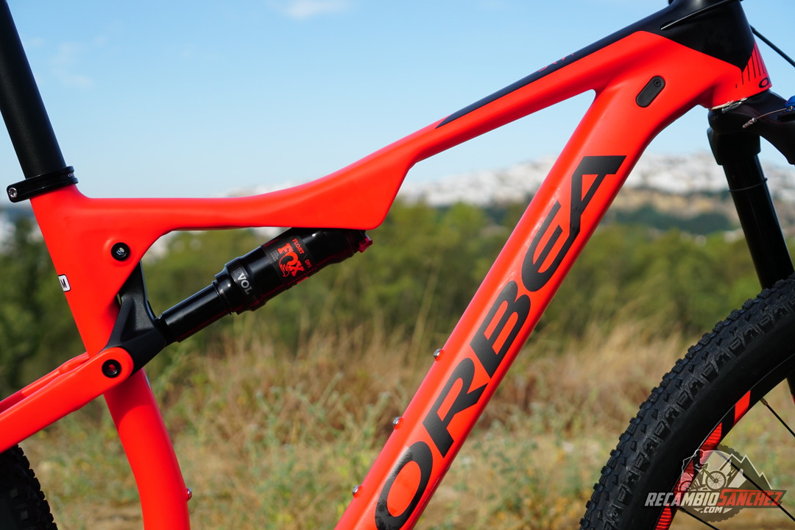
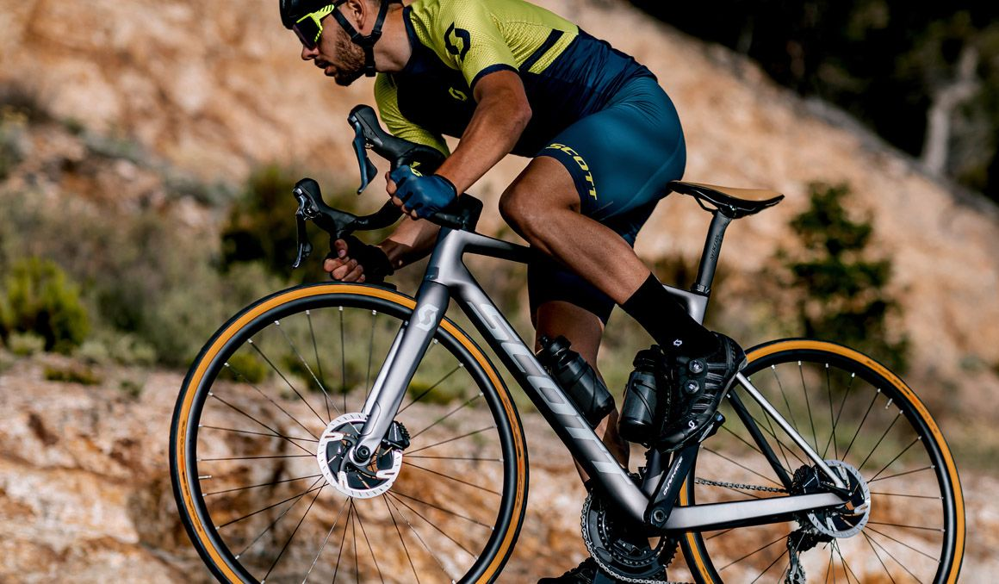
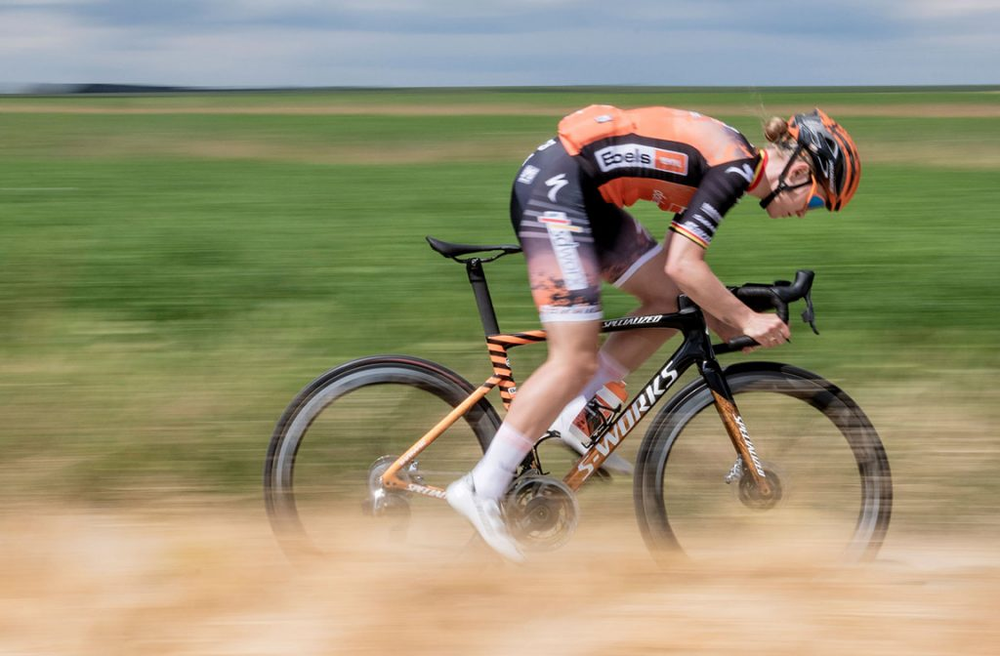
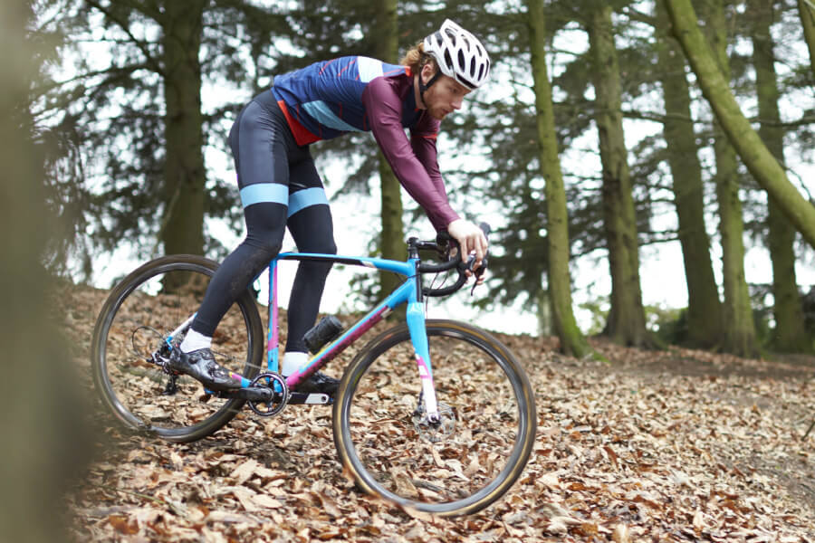
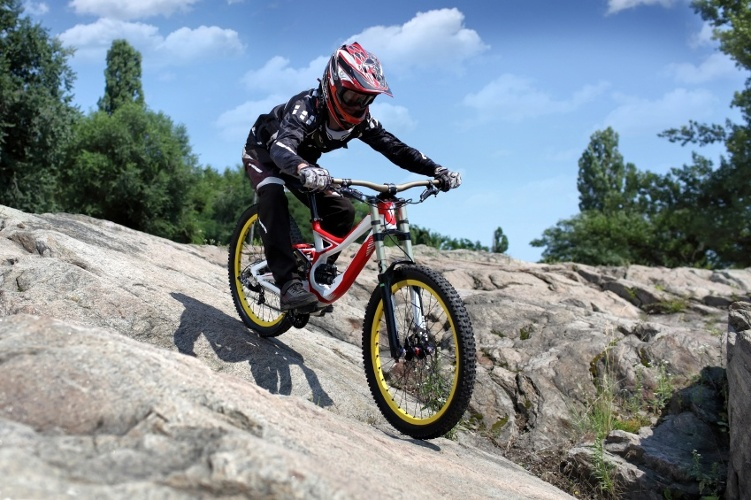

Uno de las principales ventajas que tienen las rigidas es el peso, ya que los ciclistas que compiten a nivel profesional se fijan mucho en este factor.

Una de las principales ventajas que tienen las dobles es la comodidad que tienen respecto a las rígidas, ya que al pasar por senderos o caminos más pedregosos las vibraciones generadas son menores.Por lo contrario la mayor desventaja que tienen estas es su coste al mantenerlas ya que tienenes que llevar una revisión mas especifica que en las bicis rigidas.
VIDEO BICIS DE MONTAÑA:
Este tipo de bicis estan hechas para buscar la mayor velocidad punta tanto en bajadas como en llano, las bicis suponen el 20% de la aerodinamica el 80% restante depende del ciclista.Estas bicis tambien son usadas para contrareloj.
Estas bicis no han pegado un gran cambio en cuento a geometria a lo largo de los años, pero en cambio estas a la hora de subir son mejores ya que pesan menos y son mas manejables y seguras.
Las bicicletas de carretera para gran fondo son la elección de los ciclistas a los que les gustan las rutas largas, bicicletas que siguen siendo cómodas después de muchas horas sobre el sillín y son más versátiles a la hora de rodar por diferentes tipos de carreteras.
El gravel es una modalidad de ciclismo que se práctica sobre una bicicleta que se parece en su geometría a las bicis de carretera de gran fondo, también con manillar curvo, pero con el cuadro y las ruedas adaptadas para poder ser utilizadas también fuera del asfalto.
VIDEO DE TIPOS DE BICIS DE CARRETERA:
La bicicleta de downhill es de doble suspensión (delantera y trasera) y los cuadros tienen una estructura más resistente que el de otras bicis. La mayoría suelen ser de aluminio y los competidores profesionales generalmente usan de carbono. ... La geometría de la una bicicleta de DH también está diseñada para descender.
El enduro es una disciplina competitiva que combina la exigencia técnica del downhill con la resistencia del trail. Es decir, que son bicicletas pensadas para subir y bajar pero, sobre todo, para divertirse. Las bicicletas de enduro son un paso intermedio entre las mountain bike de trail y las de cross country.
VIDEO DE TIPOS DE BICIS DE DESCENSO: